#cur_seed <- Sys.time() |> as.integer()
cur_seed <- 1779536630
set.seed(cur_seed)
keras3::set_random_seed(cur_seed)
#writeLines(cur_seed |> as.character(), "R_objects/seed.txt")Project report
Data
library(tidyverse)
library(tidymodels)
columns_to_remove <- c(
"subject_id", "hadm_id", "icustay_id", "DIAGNOSIS", "ICD9_diagnosis", "DOB",
"ADMITTIME", "Diff"
)
train_X <- read_csv("train_X.csv")
train_y <- read_csv("train_y.csv")
test_X <- read_csv("test_X.csv")
MIMIC_metadata_diagnose <- read_csv("MIMIC_metadata_diagnose.csv")
MIMIC_diagnoses <- read_csv("MIMIC_diagnoses.csv") |> janitor::clean_names()I removed all the IDs and date variables. I also removed DIAGNOSIS and ICD9_diagnosis because I couldn’t find a way to use them because they were more than 4000 different string values. As a result, the 2 classes could not be easily distinguished:
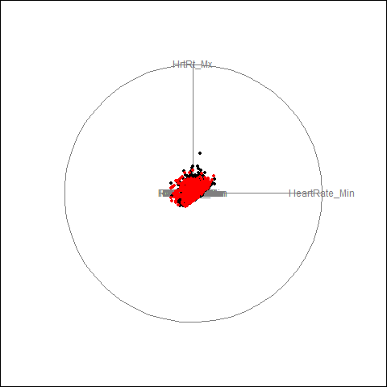
The full diagnoses are in MIMIC_diagnoses.csv, so for the pre-processing, I did a left_join() of train_X with MIMIC_diagnoses, followed by pivot_wider() to ensure all diseases are in 1 row, and then applied one-hot encoding.
combined_XY <- left_join(train_X, train_y) |>
left_join(MIMIC_diagnoses) |>
select(-seq_num) |>
mutate(from_data = 1)
test_X <- test_X |>
left_join(MIMIC_diagnoses) |>
select(-seq_num) |>
mutate(HOSPITAL_EXPIRE_FLAG = NA, from_data = 2)
merged_for_multi_hot_encode <- rbind(combined_XY, test_X)I merged the train and test data to make sure that the train and test matrix have the same dimension (The 2 matrices having different dimensions will happen due to them having different ICD9 codes, which will cause dimension mismatches).
multi_hot_encode <- function(df) df |> # This function is used for the ICD9 codes
mutate(value = 1) |>
pivot_wider(
names_from = icd9_code,
values_from = value,
values_fill = 0,
values_fn = max,
names_prefix = "ICD9_code_"
)
one_hot_encode <- function(df) { # This function is used for other categorical columns
# Identify numeric and categorical columns
num_cols <- sapply(df, is.numeric)
cat_cols <- !num_cols
# Convert categorical columns to factors
df[cat_cols] <- lapply(df[cat_cols], as.factor)
# One-hot encode categorical columns only
dummy_matrix <- model.matrix(~ . - 1, data = df[cat_cols])
# Combine untouched numeric columns with encoded columns
final_df <- cbind(df[num_cols], as.data.frame(dummy_matrix))
final_df
}
encoded_data <- merged_for_multi_hot_encode |>
multi_hot_encode() |>
select(-columns_to_remove) |>
one_hot_encode()
combined_XY <- encoded_data |>
filter(from_data == 1) |>
select(-from_data)
test_X <- encoded_data |>
filter(from_data == 2) |>
select(-c(from_data, HOSPITAL_EXPIRE_FLAG))
rm(encoded_data)After pre-processing, I split the train data to even smaller train and test sets for my own use, because the Kaggle submission had a limit of 4 per day.
train_test_split <- rsample::initial_split(combined_XY, 0.8, strata = HOSPITAL_EXPIRE_FLAG)
train_data <- rsample::training(train_test_split)
test_data <- rsample::testing(train_test_split)In the upcoming model evaluation results, all results will be on the small train and test sets, as there is the true class result in them for validation.
Logistic regression
log_model <- logistic_reg() |>
set_engine("glm") |>
set_mode("classification")
log_fit <- fit(
log_model,
HOSPITAL_EXPIRE_FLAG ~ .,
train_data |> mutate(HOSPITAL_EXPIRE_FLAG = as.factor(HOSPITAL_EXPIRE_FLAG))
)In-sample ROC AUC
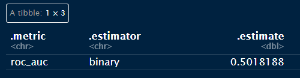
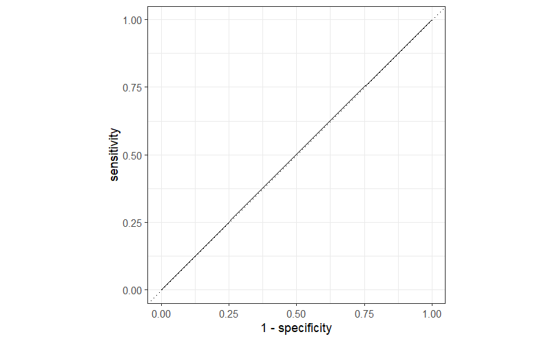
Out-of-sample ROC AUC
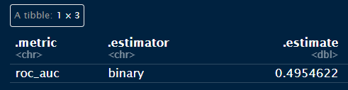
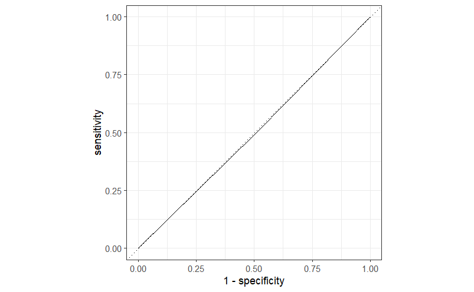
For some reason, the logistic regression model gave really bad results, both in and out of sample. The model took 2 hours to finish fitting.
KNN
I fitted a KNN model with k = 5:
knn_test_model <- nearest_neighbor(
neighbors = 5, weight_func = "rectangular", dist_power = 2
) |>
set_engine("kknn") |>
set_mode("classification")
knn_fit <- fit(
knn_test_model,
HOSPITAL_EXPIRE_FLAG ~ .,
train_data |> mutate(HOSPITAL_EXPIRE_FLAG = as.factor(HOSPITAL_EXPIRE_FLAG))
)In-sample ROC AUC
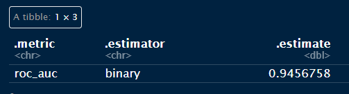
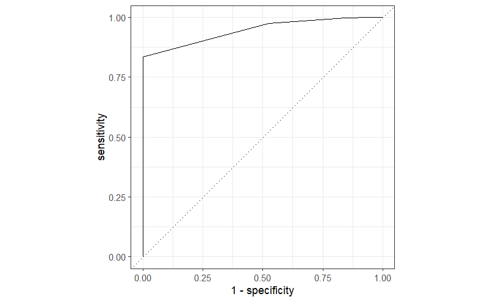
Out-of-sample ROC AUC
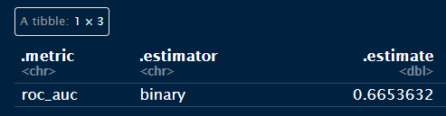
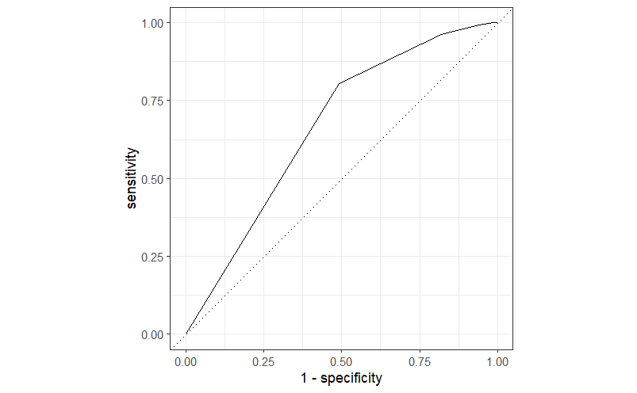
The KNN model has overfit the training data. The model took 1 hour to fit, and the prediction results for the train and test set took 1 hour each to run (So 3 hours in total for this model).
Decision tree
tree_model <- decision_tree(
min_n = 200, tree_depth = 6, cost_complexity = 0.001
) |>
set_engine("rpart") |>
set_mode("classification")
tree_fit <- fit(
tree_model,
HOSPITAL_EXPIRE_FLAG ~ .,
train_data |> mutate(HOSPITAL_EXPIRE_FLAG = as.factor(HOSPITAL_EXPIRE_FLAG))
)In-sample ROC AUC
# A tibble: 1 × 3
.metric .estimator .estimate
<chr> <chr> <dbl>
1 roc_auc binary 0.792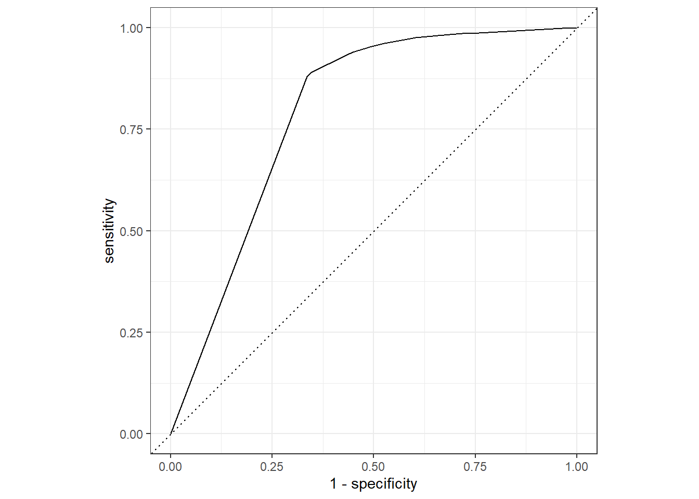
Out-of-sample ROC AUC
# A tibble: 1 × 3
.metric .estimator .estimate
<chr> <chr> <dbl>
1 roc_auc binary 0.780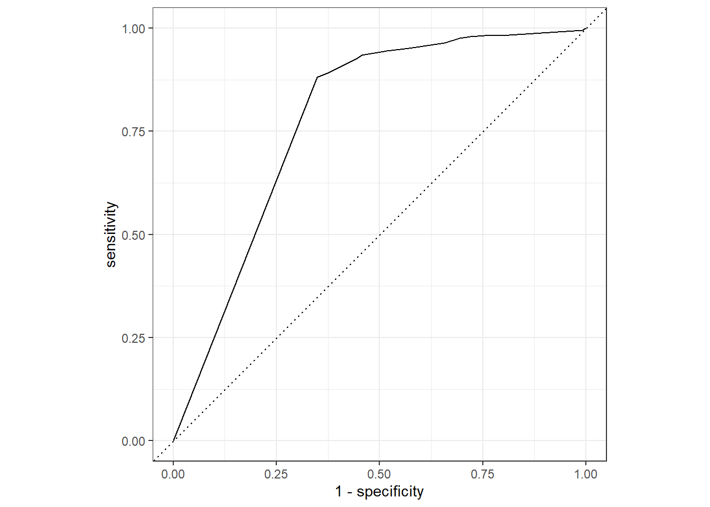
The simple decision tree model took much faster to fit and run (about 5 minutes). The performance was also much better compared to logistic regression and KNN. However, the AUC result was not satisfactory.
Neural network (the winner)
library(keras3)
NN_model <- keras_model_sequential()
NN_model |>
layer_dense(units = 1000, activation = "relu", input_shape = ncol(train_data) - 1) |>
layer_dense(units = 400, activation = "relu") |>
layer_dense(units = 20, activation = "relu") |>
layer_dense(units = 1, activation = "sigmoid")
NN_model |> compile(
optimizer = "adam",
loss = loss_binary_focal_crossentropy(),
metrics = list(metric_auc())
)The neural network has 4 layers, with the last layer having a sigmoid activation function (due to this being a binary classification project). The loss function used was loss_binary_focal_crossentropy() because of the imbalance of the 2 classes.
# Turn the data into matrix form for keras3::fit()
NN_train_X <- train_data |>
select(-HOSPITAL_EXPIRE_FLAG) |>
as.matrix()
NN_train_y <- train_data$HOSPITAL_EXPIRE_FLAG
NN_test_X <- test_data |>
select(-HOSPITAL_EXPIRE_FLAG) |>
as.matrix()
NN_test_y <- test_data$HOSPITAL_EXPIRE_FLAGI also included an early stop to prevent overfitting for the neural network:
early_stop <- callback_early_stopping(
monitor = "val_auc",
mode = "max",
patience = 10,
restore_best_weights = TRUE
)
NN_fit <- NN_model |>
keras3::fit(
x = NN_train_X,
y = NN_train_y,
validation_data = list(
NN_test_X,
NN_test_y
),
epochs = 30,
batch_size = 32, # default
verbose = 0,
callbacks = list(early_stop)
)
summary(NN_model)Model: "sequential"
┌───────────────────────────────────┬──────────────────────────┬───────────────
│ Layer (type) │ Output Shape │ Param #
├───────────────────────────────────┼──────────────────────────┼───────────────
│ dense (Dense) │ (None, 1000) │ 5,402,000
├───────────────────────────────────┼──────────────────────────┼───────────────
│ dense_1 (Dense) │ (None, 400) │ 400,400
├───────────────────────────────────┼──────────────────────────┼───────────────
│ dense_2 (Dense) │ (None, 20) │ 8,020
├───────────────────────────────────┼──────────────────────────┼───────────────
│ dense_3 (Dense) │ (None, 1) │ 21
└───────────────────────────────────┴──────────────────────────┴───────────────
Total params: 17,431,325 (66.50 MB)
Trainable params: 5,810,441 (22.17 MB)
Non-trainable params: 0 (0.00 B)
Optimizer params: 11,620,884 (44.33 MB)plot(NN_fit)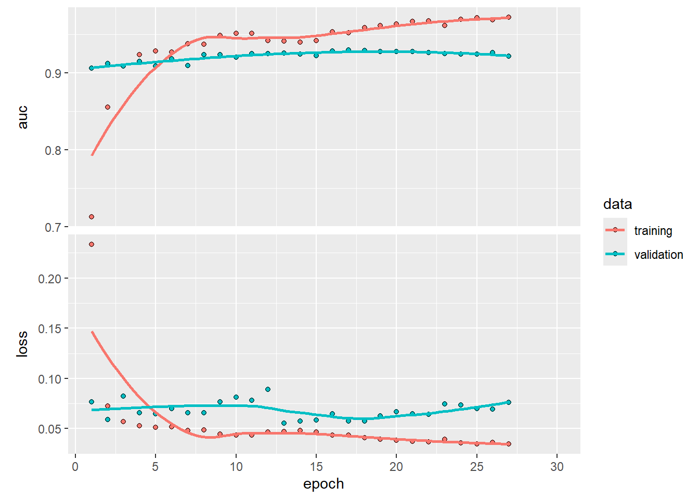
The fitting stopped after 27 epochs
In-sample ROC AUC
train_res <- train_data |>
mutate(
HOSPITAL_EXPIRE_FLAG = as.factor(HOSPITAL_EXPIRE_FLAG),
pred_prob = 1 - predict(
NN_model,
NN_train_X
)[,1],
pred_class = round(1 - pred_prob) |> factor(levels = c(0, 1))
) |>
select(HOSPITAL_EXPIRE_FLAG, pred_prob, pred_class)392/392 - 1s - 2ms/steproc_auc(train_res, HOSPITAL_EXPIRE_FLAG, pred_prob)# A tibble: 1 × 3
.metric .estimator .estimate
<chr> <chr> <dbl>
1 roc_auc binary 0.979roc_curve(train_res, HOSPITAL_EXPIRE_FLAG, pred_prob) |> autoplot()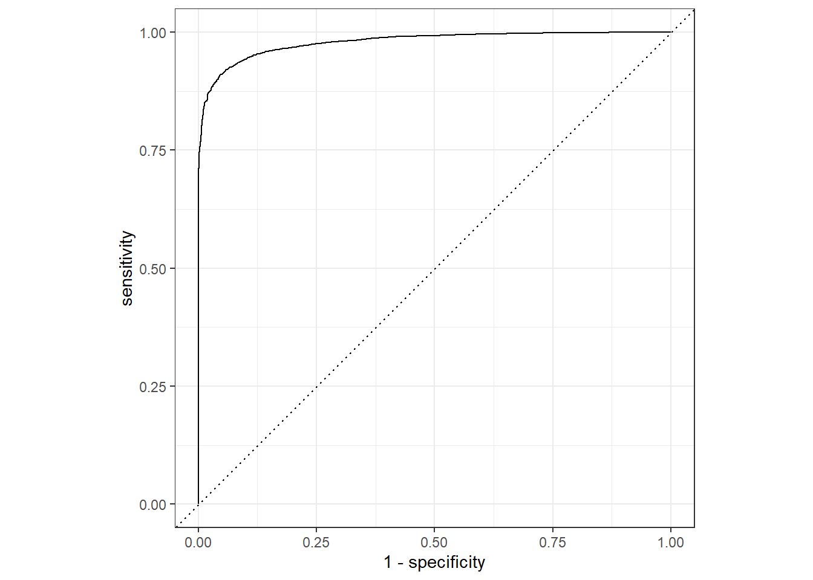
Out-of-sample ROC AUC
test_res <- test_data |>
mutate(
HOSPITAL_EXPIRE_FLAG = as.factor(HOSPITAL_EXPIRE_FLAG),
pred_prob = 1 - predict(
NN_model,
NN_test_X
)[,1],
pred_class = round(1 - pred_prob) |> factor(levels = c(0, 1))
) |>
select(HOSPITAL_EXPIRE_FLAG, pred_prob, pred_class)98/98 - 0s - 2ms/steproc_auc(test_res, HOSPITAL_EXPIRE_FLAG, pred_prob)# A tibble: 1 × 3
.metric .estimator .estimate
<chr> <chr> <dbl>
1 roc_auc binary 0.930roc_curve(test_res, HOSPITAL_EXPIRE_FLAG, pred_prob) |> autoplot()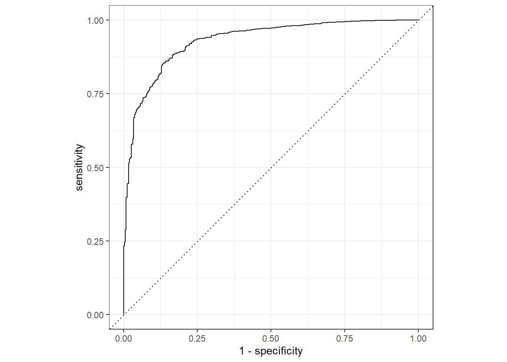
Kaggle AUC score
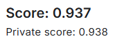
The NN model did not take long to run (about 10 minutes, slightly longer than decision tree). The key step that helped this model to achieve good result was the merging of extra ICD9 codes into the main data (before that, the NN model could not pass 0.8 AUC score).